CE Vendor visual guide
Build the market, serve the community, and close with proof.
Follow one vendor from arrival through final closeout. Each scene connects the market path to a clear action on event day.
01
Artwork coming next
Beat 01
Arrive Prepared
Bring table gear, inventory, and arrival details so check-in can start on time.
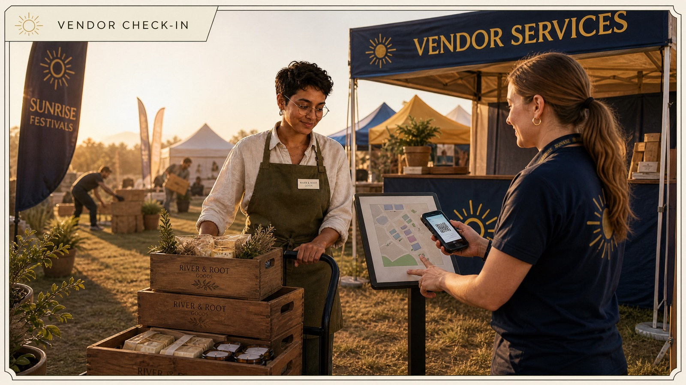
Beat 02
Vendor Check-In
Confirm the assigned location, access route, and support contact before unloading.
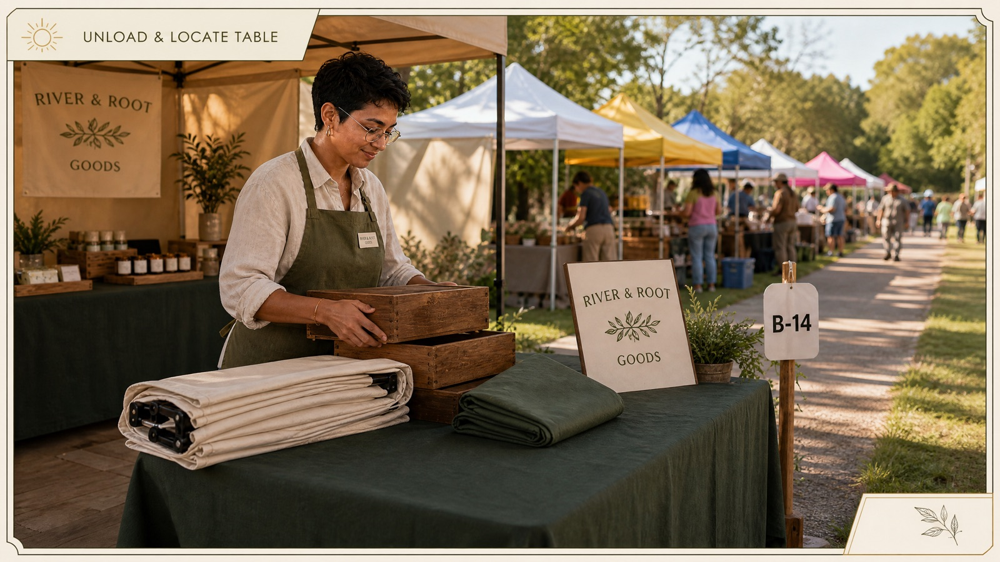
Beat 03
Unload & Locate
Move products to the assigned table and keep the market route clear.
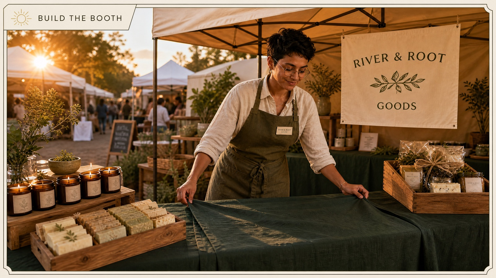
Beat 04
Build the Booth
Set the display, organize products, and make the table welcoming and safe.
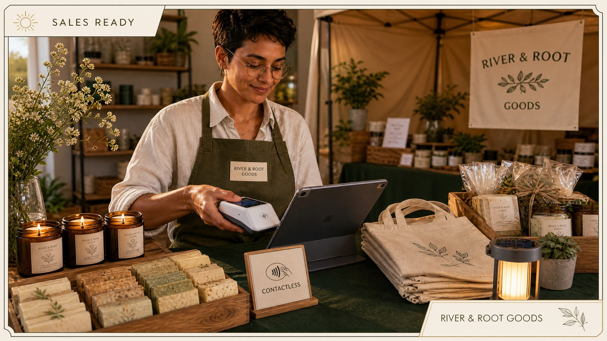
Beat 05
Sales Ready
Check payment tools, pricing, inventory, and customer materials before opening.
06
Artwork coming next
Beat 06
Open the Table
Make the final readiness check, welcome the first guests, and signal any support needs.
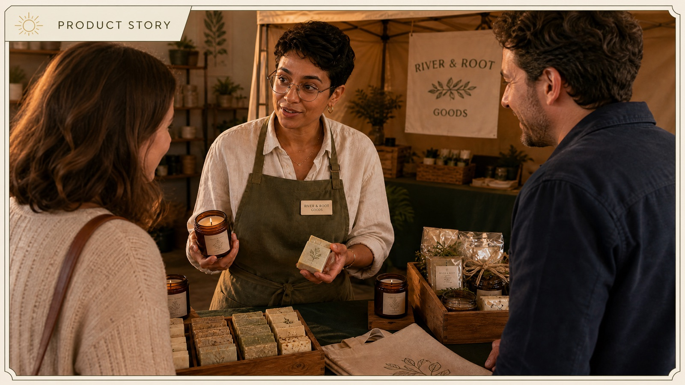
Beat 07
Product Story
Explain what the product does, where it comes from, and why it matters.
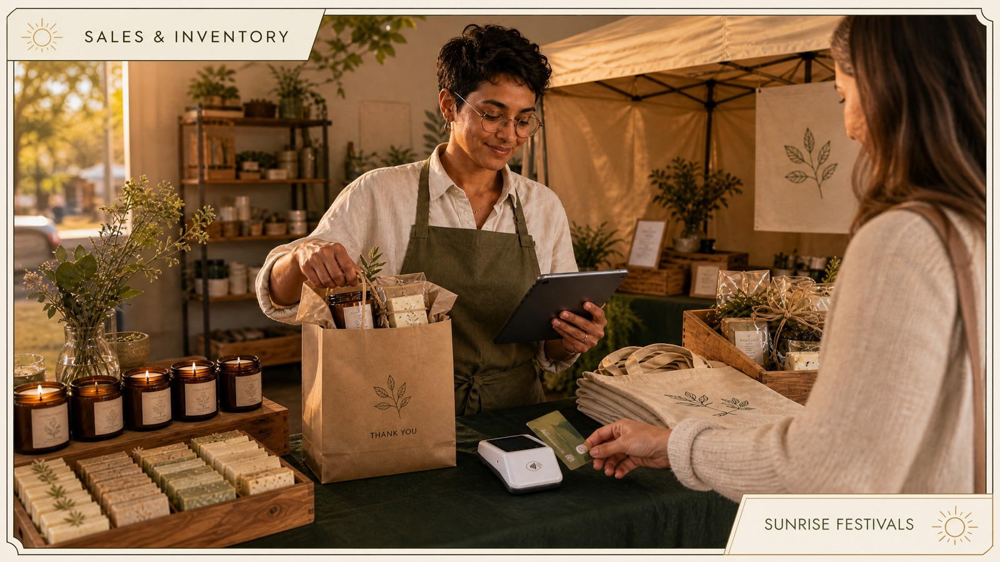
Beat 08
Sales & Inventory
Complete sales smoothly and keep a simple record of what leaves the table.
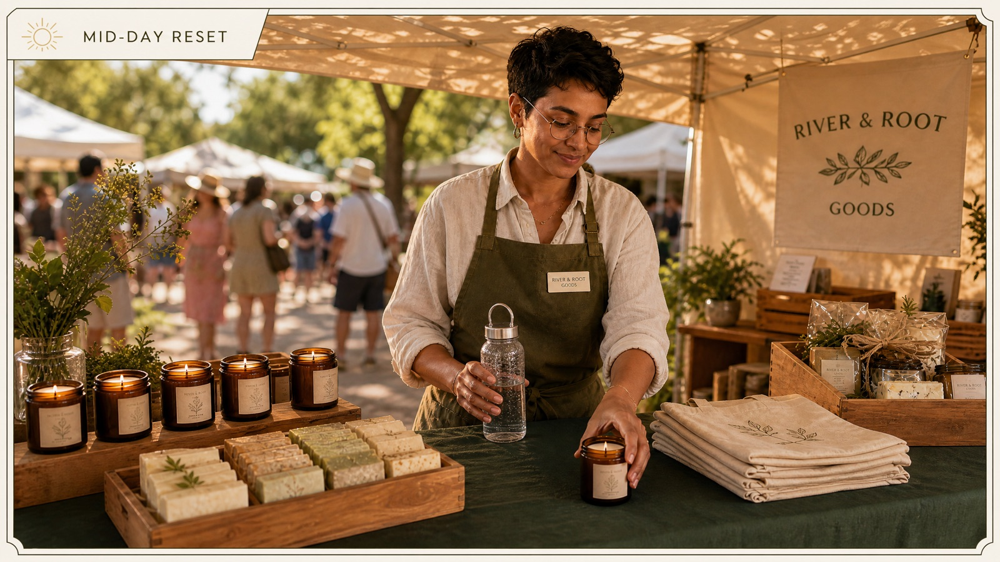
Beat 09
Mid-Day Reset
Hydrate, reset the display, and keep the booth ready for the next crowd.
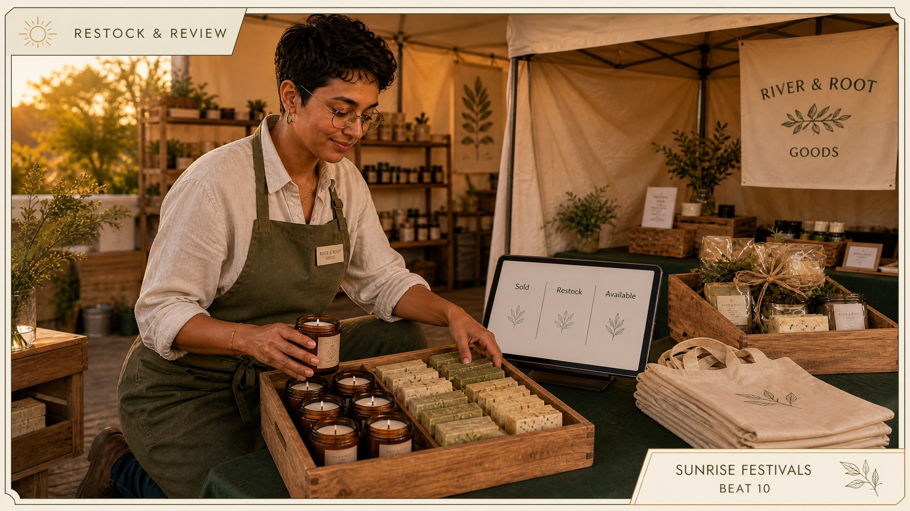
Beat 10
Restock & Review
Review what is selling, restock the table, and flag any operational need.
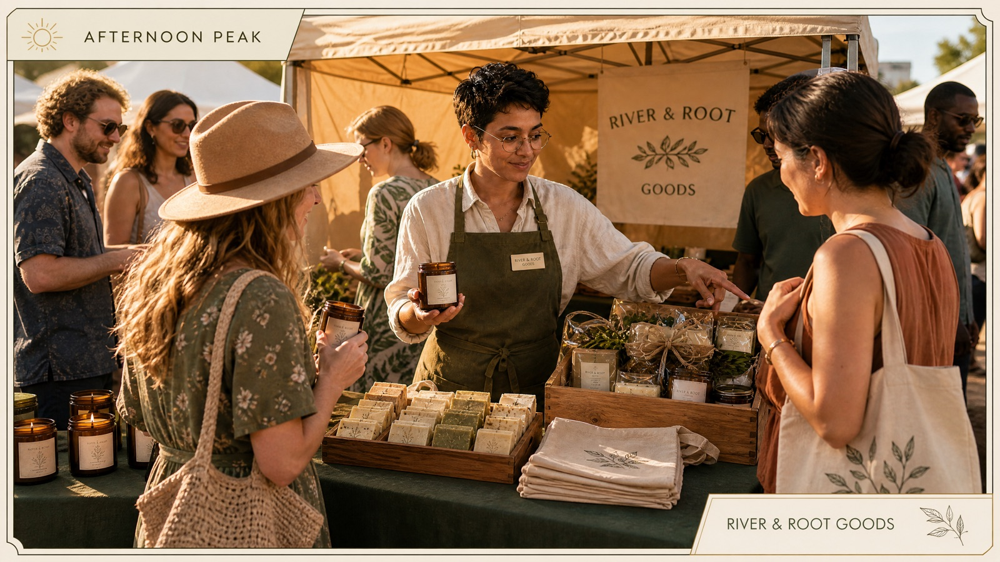
Beat 11
Afternoon Peak
Stay welcoming and organized while the market reaches its busiest period.
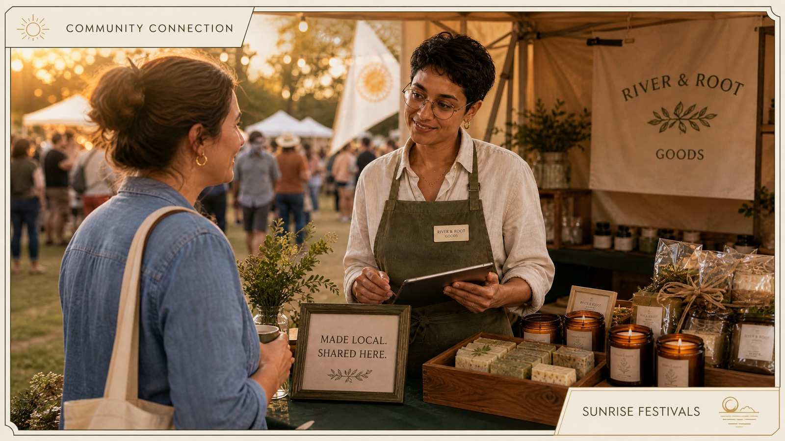
Beat 12
Community Connection
Listen for useful feedback and build relationships beyond the transaction.
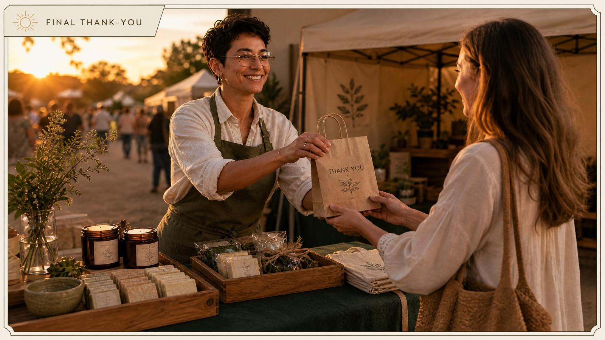
Beat 13
Final Thank-You
Close the customer experience with care and let guests know the market is ending.
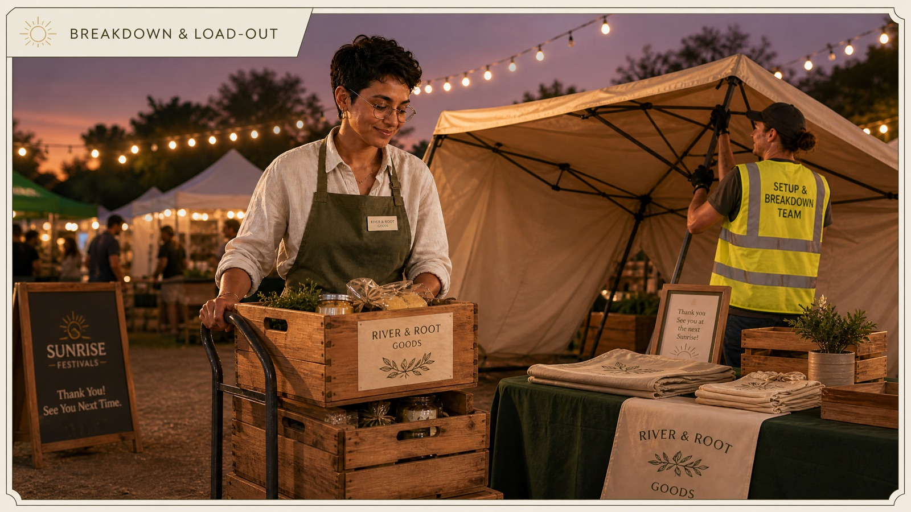
Beat 14
Breakdown & Load-Out
Pack inventory, clear the booth, and coordinate a safe exit from the site.
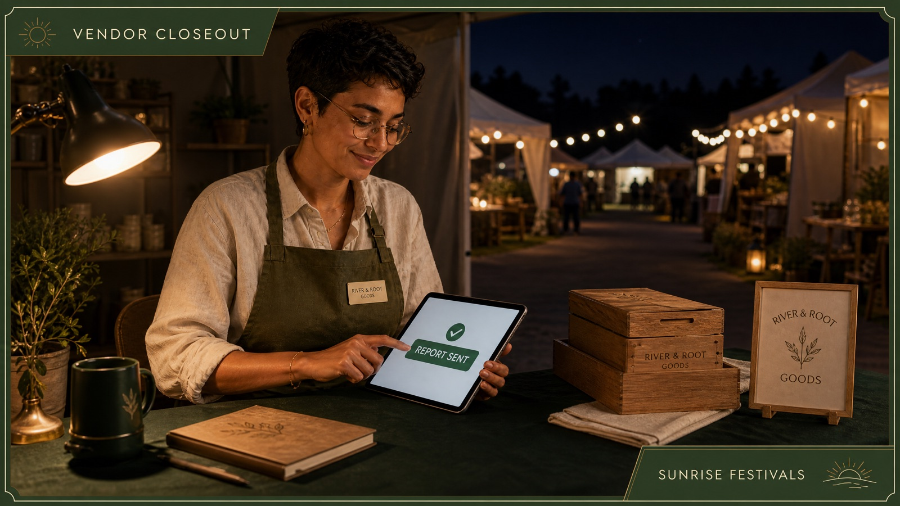
Beat 15
Vendor Closeout
Send the final report so the Event Lead has a complete record of the day.